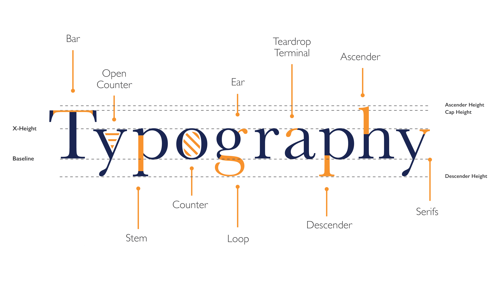

Typeface anatomy refers to the individual components that form each letter, such as the baseline, x-height, ascenders, descenders, stems, bowls, and serifs. Understanding these elements is crucial for designers, as they influence legibility, readability, and the overall aesthetic of text. Having an understanding of type anatomy aids in making informed typographic choices.
div class="iframe-wrapper">